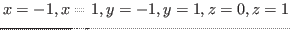

viewportクラスは、正規デバイス座標系(NDC)の中の3次元viewportのクリップ
を実行する。そして、デバイスに依存する座標系に結果を作る。
viewportは、画面上の見える四角領域の境界表現である。
viewportの物理的な大きさ（x軸とy軸方向のドット数）は、
:initメッセージの中の:widthと:heightとの引き数
で与えられなければならない。
:xcenterと:ycenter引き数は、viewportの物理的な位置を決定する。
画面の原点からのそれぞれの次元が絶対的に与えられているテクトロニクス4014
のような基本的なディスプレイデバイスを使っているとき、これら2つのパラメータは、実際に画面の上にオブジェクトを描く位置を決定する。
もし、位置が親windowから相対的に決まるXwindowのような精巧なディスプレイ
デバイスを使っているなら、
viewportを動かすためにviewportのパラメータを変える必要はない。
なぜなら、これらのパラメータは、実際のディスプレイ位置に依存しないからである。。
viewportクラスは、四角領域の左下をviewportの原点と仮定している。
そして、y軸は上方向に伸びているとする。
しかし、多くのwindowシステムやディスプレイデバイスでは原点を左上とし、
y軸が下方向に伸びているとしている。
この問題を回避するために、:heightパラメータに負の値を与えればよい。
homo-viewport-clip v1 v2 [関数]
-
-
v1とv2は、4要素を持つ同次ベクトルであって、
3次元空間の線分として表現される。
その線分は、
の境界でクリップされる。
そして、2つのベクトルのリストを返す。
もし、その線分がviewportの外側に完全に置かれているならば、
NILを返す。
viewport [クラス]
:super coordinates
:slots
-
- viewport変換は、デバイスで指定される座標系にNDC（正規化デバイス座標系）を作る。
coordinatesクラスを継承しているため、viewportはサイズと投影画面の
相対位置を定義している。
:xcenter &optional xcenter [メソッド]
-
-
このviewportのx軸の中心を返す。
もし、xcenterが与えられていれば、設定を行う。
:ycenter &optional ycenter [メソッド]
-
-
このviewportのy軸の中心を返す。
:size &optional size [メソッド]
-
-
このviewportのx軸とy軸方向の大きさのリストを返す。
:width &optional width [メソッド]
-
- このviewportの幅をwidthに
設定する。
:height &optional height [メソッド]
-
- このviewportの高さを
heightに設定する。
:screen-point-to-ndc p [メソッド]
-
-
pは、物理的画面の中の位置を表現する実数ベクトルである。
pは、正規化デバイス座標系(NDC)の中での表現に変換される。
:ndc-point-to-screen p [メソッド]
-
-
このviewportのNDC表現であるpを画面の物理的位置に変換する。
:ndc-line-to-screen p1 p2 &optional (do-clip t) [メソッド]
-
-
2つの3次元ベクトルp1とp2は、NDCの中の線分を定義する。
これらの2つの端点は、画面空間の表現に変換される。
もし、do-clipがnon-NILなら、その線分はクリップされる。
:init &key (:xcenter 100) (:ycenter 100) (:size 100)
(width 100) (height 100) [メソッド]
-
- 新しいviewportオブジェクトを作る。
2016-03-23